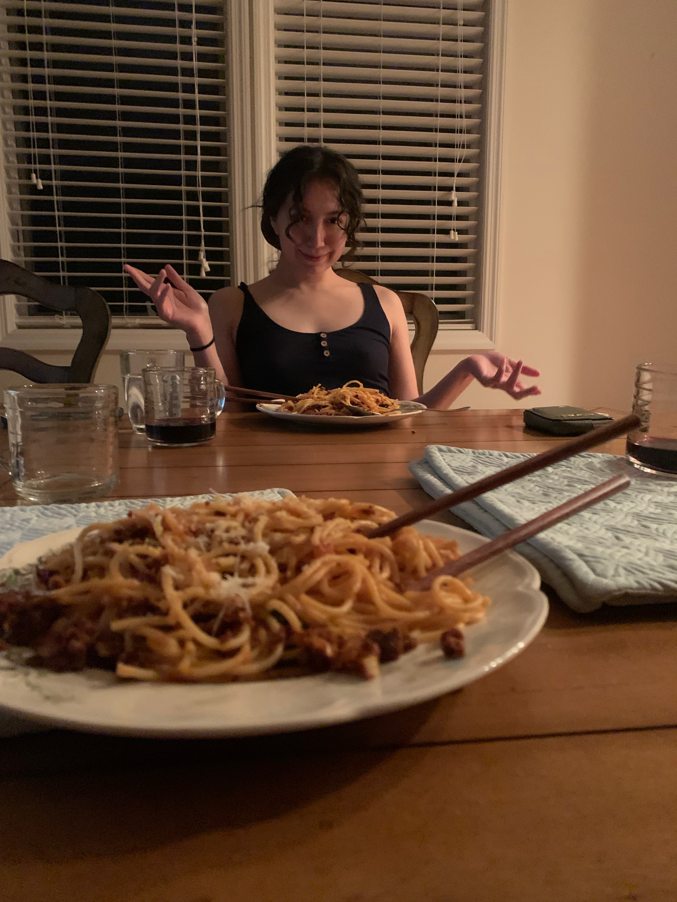

Spaghetti

Description
This spaghetti recipe will blow your socks off! Victoria and I were for the most part free stylin' when we came up with it, so we know that you won't have trouble experimenting with it!
The taste of the dish is rich & delicious and the notes of buttery basil in the pasta will have you begging for more. We cleaned our plates and felt no remorse grabbing seconds.
Ingredients
- 1 box of spaghetti
- 1 lb of chorizo (note that we used soy-based meat)
- 3/4 jar of tomato basil sauce
- 1/2 large onion
- 6 small shiitake mushrooms
- 2 med cloves of garlic
- 3 small basil leaves (homegrown is best!)
- 1/4 lb of spinach
- 2 roma tomatoes
- 1 tbsp salt
- 1 tbsp butter
- 2 tsp red pepper flakes
- 2 tsp freshly ground black pepper
- 2 tsp oregano
Steps
- Bring a large pot of salted water to a boil
- Wash & chop veggies while waiting
- Saute onions and chorizo for 6-8 min
- Add pasta to water once it starts to boil
- In a separate pan bring tomatoes and mushrooms to a simmer
- Add spinach and garlic and sauce to tomato pan
- Strain pasta once it's done, mix with butter and basil in strainer
- Season both pans with salt, pepper, & oregano
- Combine pasta and meat mixture into the tomato pan and mix
- Serve!